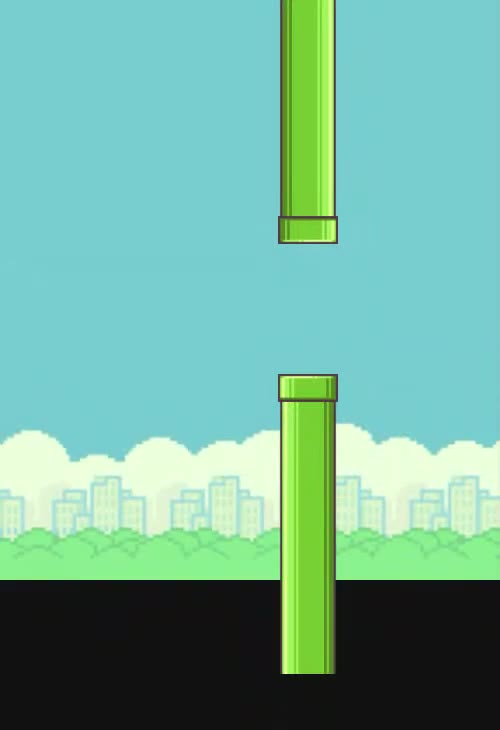

Experience
Flappy Bird is a browser game centered on timing-based movement, obstacle navigation.

Description
The player balances upward input against the character’s fall. Each opening becomes a short positioning problem: reach the correct height, pass through the gap, and prepare for the next one.
A collision ends an attempt and makes restarting part of the loop. The visible distance between openings and the character’s current height provide the information needed for the next action.
Detailed features
Timing-based movement
Movement and viewpoint work together to make the space readable. The player uses the controls to choose a route, judge distance, and position the character for the next interaction.
Obstacle navigation
Movement and viewpoint work together to make the space readable. The player uses the controls to choose a route, judge distance, and position the character for the next interaction.
Continuous traversal
Movement and viewpoint work together to make the space readable. The player uses the controls to choose a route, judge distance, and position the character for the next interaction.
Build summary
The project is presented with JavaScript · HTML Canvas. Its implementation connects the input or controls, the project’s changing state, and the rendered interface. The Source action opens the saved code or build material for this entry.
- Technology
- JavaScript · HTML Canvas
- Scope
- Interactive project
- Feature focus
- Timing-based movement
Feature video
Project recording · 500 × 730 · Original resolution